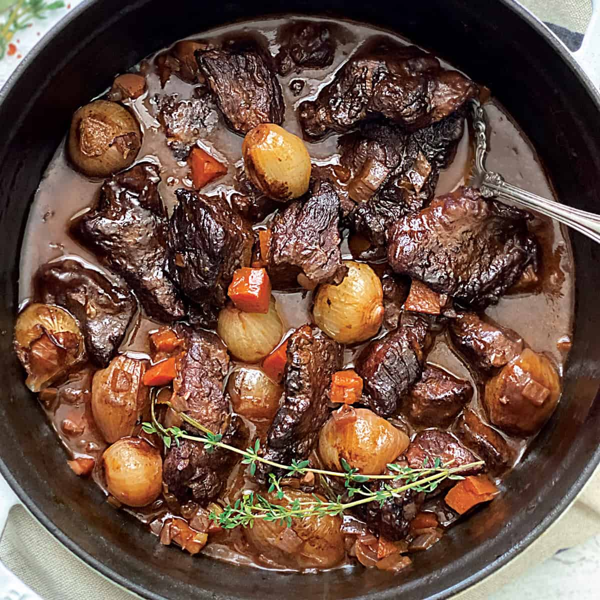

Stifado

Tender beef and sweet shallots in a tangy, aromatic sauce make my version of beef stifado one you'll surely want to try! Be sure to serve it with crusty bread to dip in the sauce. Top the stew with crumbled feta and pickled red onions.
Ingredients
- 3 pounds boneless beef chuck roast, cut into 2-inch cubes
- 2 teaspoons freshly ground black pepper
- 1 tablespoon kosher salt
- 4 tablespoons olive oil, divided
- 1 pound small shallots
- ½ cup diced onion
- 4 cloves garlic, minced
- 1 pinch kosher salt
- 3 tablespoons tomato paste
- ¼ cup red wine vinegar
- 1 cup white wine
- 2 teaspoons white sugar
- ¼ teaspoon ground cinnamon
- ⅛ teaspoon ground allspice
- 1 pinch ground cloves
- 1 teaspoon dried oregano
- 2 large bay leaves
- 2 sprigs fresh rosemary
- 2 cups beef broth, or more as needed
Steps
- Gather all ingredients.
- Place beef in a bowl and season generously with pepper and kosher salt. Cover and transfer to the refrigerator until ready to use; up to 1 day is fine.
- Leaving the root ends in place, cut off the shallot tops. Remove and discard skins.
- Heat 2 tablespoons oil in a heavy skillet over high heat. Add ½ of the beef and cook until nicely seared, 4 to 6 minutes per side. Remove to a plate and repeat to sear remaining beef.
- Turn off the heat and add 1 tablespoon oil to the empty skillet. Add shallots and let the skillet cool for 2 to 3 minutes. Turn the heat back on to medium and toss shallots until browned, 2 to 4 minutes. Remove shallots to a plate.
- Add the remaining 1 tablespoon oil to the skillet with onion, garlic, and a pinch of salt; cook and stir for about 1 minute. Stir in tomato paste and cook until toasted, about 2 minutes.
- Add red wine vinegar and white wine and bring to a boil while scraping the browned bits of food off the bottom of the pan with a wooden spoon. Increase heat to medium-high and add sugar, cinnamon, allspice, cloves, oregano, bay leaves, and rosemary sprigs. Stir to combine and cook until reduced by about half, 2 to 3 minutes.
- Add browned beef and shallots to the skillet and toss carefully until coated. Pour in 2 cups beef broth and bring to a simmer.
- Reduce heat to low or medium-low. Cover and cook at a gentle simmer for 1 hour, then uncover and cook for at least 1 more hour, stirring occasionally to move the beef and shallots around. Add more broth if needed during the cooking time and skim off some fat if preferred.
- The meat is done when a fork slides in easily, but the meat isn't falling apart on its own; it may take longer than 2 hours
- Taste and adjust seasonings before serving.
- Serve and enjoy!